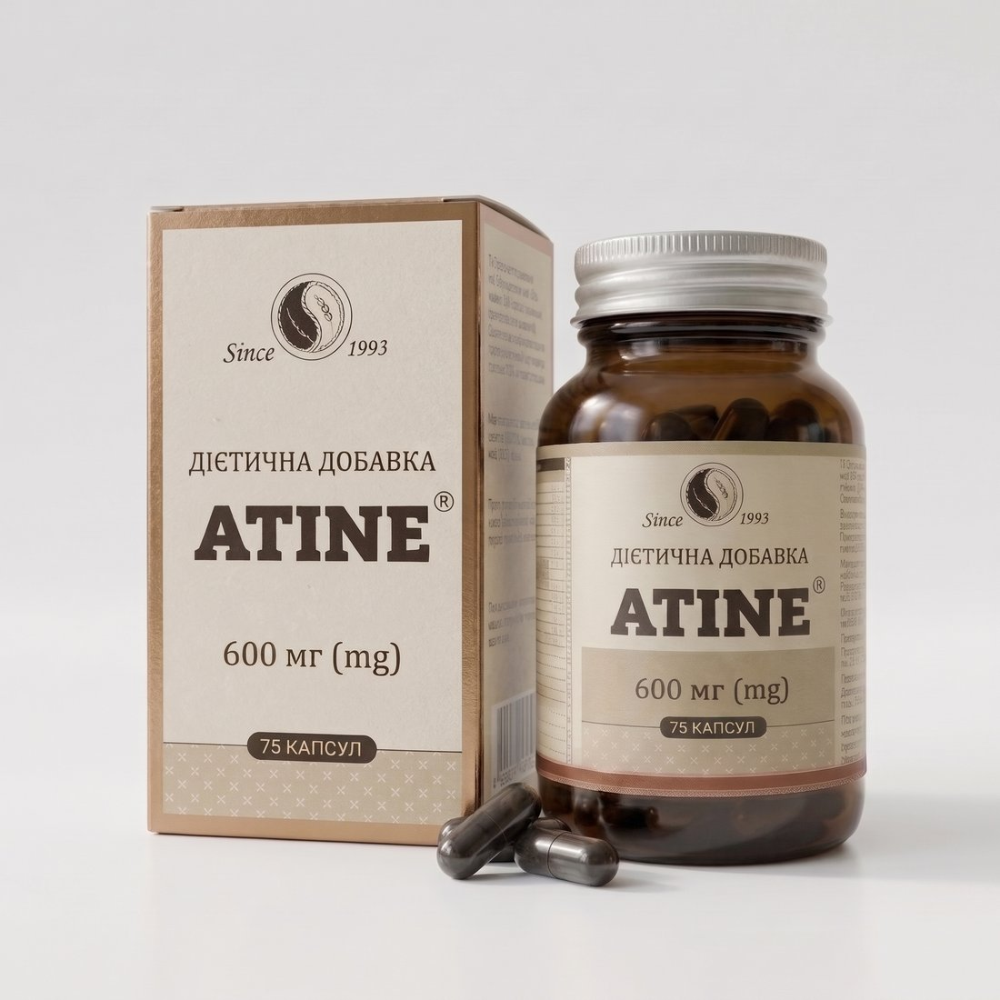

Фіточай
20 пакетиків1 порція = 1 базова дозаБазова платформа схеми прийому.
₴1 100
Не п’ять різних товарів, а єдина система прийому: водна екстракція створює базову платформу, а форми етанольного екстракту дозволяють поступово нарощувати навантаження.

Усі форми походять з одного рецептурного комплексу 26 коренів. Різниця — у способі вилучення речовин і в тому, яку роль форма відіграє в схемі прийому.
З фіточаю починається схема прийому: одна порція — одна базова доза. Саме фіточай застосовувався в опублікованих клінічних спостереженнях.
Густий екстракт вивчали в експериментальних дослідженнях 2025–2026. Таблетки, капсули та саше виготовляються на його основі й стандартизуються в умовних дозах для точного нарощування.
Три запитання — і ми підкажемо, з чого почати. П’ять форм ATINE — це одна система прийому, а не п’ять різних продуктів.
З фіточаю починається схема ATINE: одна порція — одна базова доза, тричі на добу. Найкращий спосіб познайомитися з формулою й оцінити переносимість.
Це не медична рекомендація. Форму і схему прийому узгоджуйте з лікарем.
Фіточай як основа, а таблетки дозволяють поступово нарощувати навантаження кроком у 0,5 дози — так, як передбачає розширена схема.
Це не медична рекомендація. Форму і схему прийому узгоджуйте з лікарем.
Якщо ви вже знайомі з ATINE, капсули (1 доза) і саше (3 дози) дають зручне й точне продовження схеми без зайвих прийомів.
Це не медична рекомендація. Форму і схему прийому узгоджуйте з лікарем.
Найбільш концентрована форма для індивідуального підбору: одна чайна ложка — 5 умовних доз. Дозування визначає лікар.
Це не медична рекомендація. Форму і схему прийому узгоджуйте з лікарем.
Ціни вказано за упаковку. Доставка Новою Поштою по Україні розраховується автоматично; замовлення з інших країн — через запит менеджеру.
Базова платформа схеми прийому.

Перший крок нарощування.

Наступний крок нарощування після таблеток.

Концентрована форма етанольної гілки для лікарських схем, коли потрібне точне налаштування добового навантаження..

Форма для пікових фаз схеми.
Цей сайт не призначений для забезпечення діагностики, лікування або медичних порад. Інформація на цьому сайті надана лише з інформаційною метою. Будь ласка, проконсультуйтеся з лікарем про будь-які медичні та пов'язані зі здоров'ям діагнози та методи лікування. Інформація на цьому сайті не повинна розглядатися як заміна консультації з лікарем. Заяви, зроблені про конкретні товари на цьому сайті, не підтверджені для лікування, діагностики або запобігання хворобам.
ATINE — добавка дієтична. Не є лікарським засобом. Не замінює протипухлинне лікування.